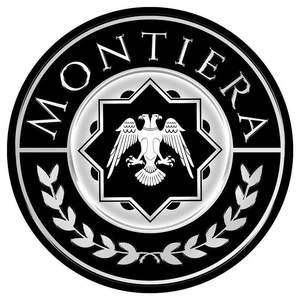

Trade Mark Journal No.2025/014 4 April 2025
UK00004173829 14 March 2025 (12)

- Class 12
- Motorized land vehicles (including motorcycles, scooters) and engines, clutches and transmission connections for these vehicles, transmission belts and chains, gears, brakes, brake discs and pads, chassis, bodywork, suspensions, shock absorbers, transmissions, steering wheels, rims, forklifts, caravans (including motorhomes and towing ones); Bicycles and their frames, handlebars, mudguards and saddles; Vehicle bodies; tipping bodies for trucks; trailers for tractors; frigorific bodies for land vehicles; trailer hitches for vehicles; Vehicle seats; head-rests for vehicle seats; safety seats for children, for vehicles; seat covers for vehicles; vehicle covers (shaped); sun-blinds adapted for vehicles; Arms for direction signals, wipers for vehicle windows, wiper arms; Inner and outer tires for vehicle wheels; tubeless tires; tire-fixing sets comprised of tire patches and tire valves for vehicles; Windows for vehicles, safety windows for vehicles, rearview mirrors and wing mirrors for vehicles; Anti-skid chains for vehicles; Roof racks for vehicles, bicycle and ski carriers; Air pumps for vehicles, for inflating tires; Burglar alarms, reverse alarms, horns for vehicles; Safety belts for vehicle seats, air bags (safety devices for automobiles); Baby carriages, wheelchairs, pushchairs; Wheelbarrows; shopping carts; single or multi-wheeled wheelbarrows; shopping trolleys; grocery carts; handling carts; Rail vehicles : locomotives; trains; trams; waggons; cable cars; chairlifts; Vehicles for locomotion by water and their parts, other than their motors and engines; Aircraft and parts thereof (excluding engines); Drones, unmanned aerial vehicles.
NIEVE OTOMOTIV SANAYI TICARET ANONIM SIRKETI
Representative: RightPro IP & Legal Consultancy Ltd.